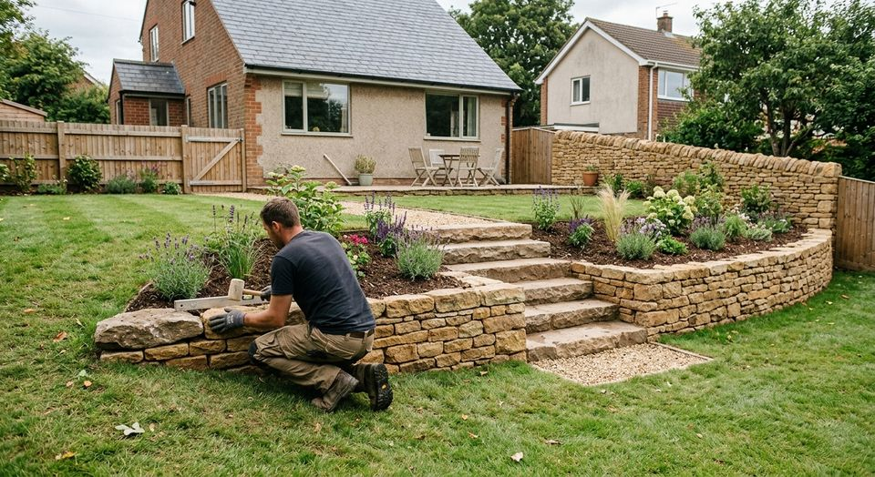

À propos
AS VERT, une entreprise de jardin installée à Versailles.
Créée en janvier 2009, la société AS VERT exerce dans les services d'aménagement paysager. Elle est dirigée par Gregory Renard.

Ce que vous pouvez attendre
Trois engagements simples, pas de promesses en l'air.
Un dirigeant identifié
Gregory Renard dirige l'entreprise : vous savez à qui vous parlez.
Un devis par prestation
Entretien, aménagement, création : chaque travail est proposé sur devis.
Un ancrage local
L'entreprise est établie à Versailles, dans les Yvelines.
Repères
Une société inscrite et en activité depuis 2009.
AS VERT est une société à responsabilité limitée, immatriculée au registre national des entreprises. Son activité principale est enregistrée sous le code 81.30Z : services d'aménagement paysager.
Informations issues de l'Annuaire des Entreprises (INSEE, INPI).
Fiche d'identité
- Dénomination
- AS VERT
- Forme
- SARL
- Création
- 30 janvier 2009
- SIREN
- 510 054 877
- Activité
- Services d'aménagement paysager (81.30Z)
- Siège
- 2 allée Emmanuel Chabrier, 78000 Versailles
Faisons connaissance
Parlez-nous de votre jardin.
Un appel suffit pour poser votre question ou décrire votre projet.
Demander un devis